all transients in sector22 (60 total)
Each figure has three panels. The top panel shows the transient light curve, the middle panel shows the local background (estimated in an annulus), and the bottom panel shows a "background-model corrected" light curve. Details about the background model are in the README.
The vertical red line marks the time of discovery reported to TNS. Other useful metadata from TNS is in the figure title.
Note that the top and bottom panel are in magnitudes, while the middle panel is in differential flux units. The magnitudes are calibrated to the flux in the reference image used for image subtraction. Thus, flux from the host galaxy is included in these magnitudes.
3-sigma upper limits are plotted as triangles with no errorbars. A typical limiting magnitude is 19.6 in 30 minutes or 18.4 in 200 seconds (for low backgrounds).
The links allow you to download the light curve data as a text file.
More details in the README.
2020dra
2020ddi
2020eek
2020djw
2020dho
2020doo
2020dbl
2020dop
2020dwy
2020dbi
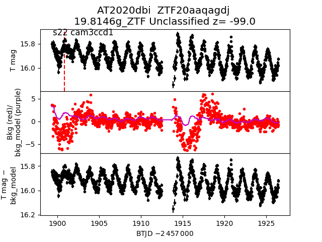
2020eck
2020ect
 2020dnf
2020dnf
 2020dvo
2020dwj
2020dtw
2020eeq
2020dzi
2020dcs
2020dvo
2020dwj
2020dtw
2020eeq
2020dzi
2020dcs
 2020dyt
2020elp
2020dvf
2020ebr
2020cym
2020dns
2020dya
2020dyt
2020elp
2020dvf
2020ebr
2020cym
2020dns
2020dya
 2020dkk
2020gpe
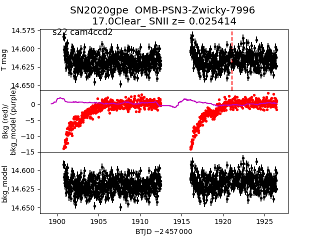
2020dxw
2020dos
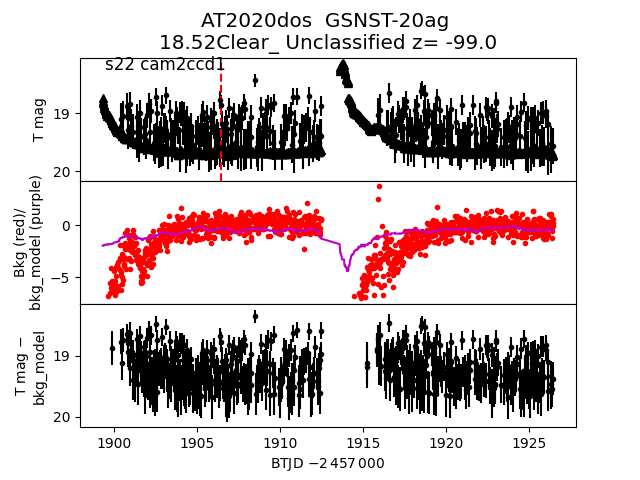
2020dqv
2020drk
2020dsn
2020dkk
2020gpe
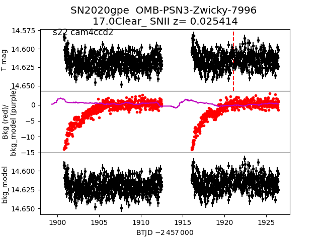
2020dxw
2020dos
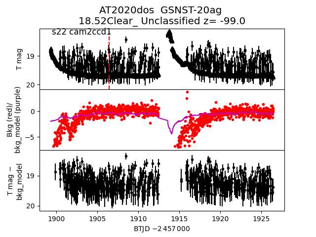
2020dqv
2020drk
2020dsn
 2020cxd
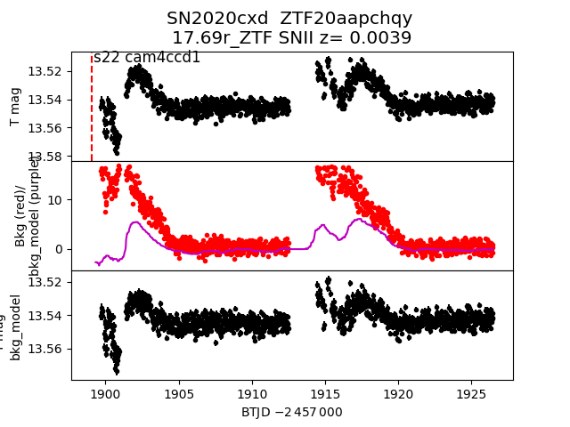
2020dbf
2020ddu
2020emb
2020duz
2020dyu
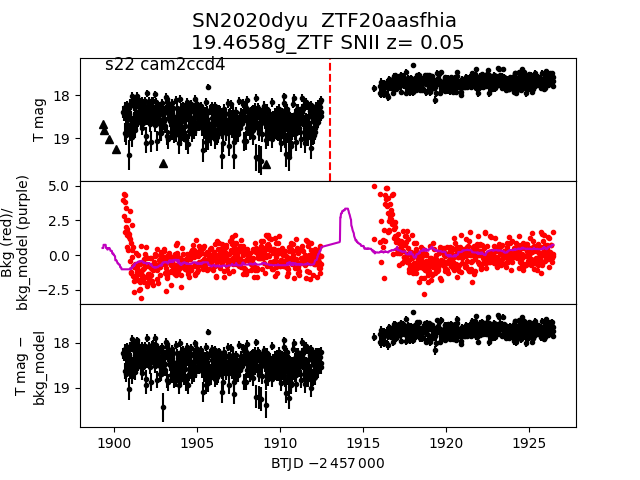
2020drs
2020dhk
2020dxu
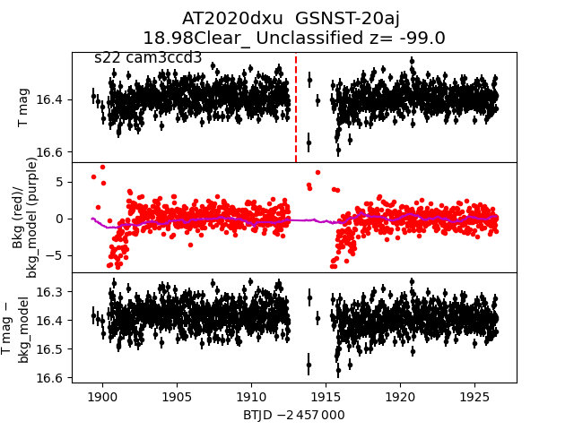
2020dgc
2020cxd
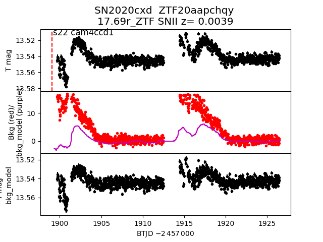
2020dbf
2020ddu
2020emb
2020duz
2020dyu
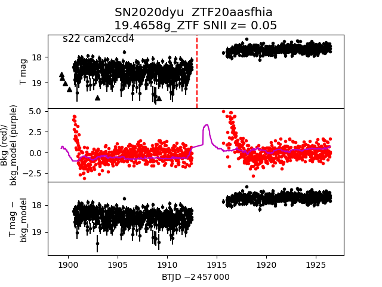
2020drs
2020dhk
2020dxu
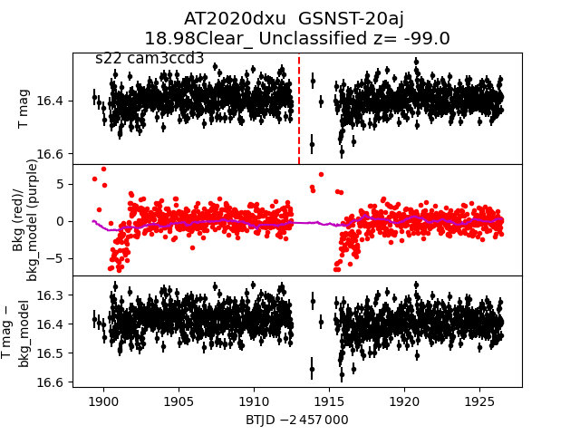
2020dgc
 2020cxf
2020elt
2020dsl
2020dnk
2020dwn
2020dts
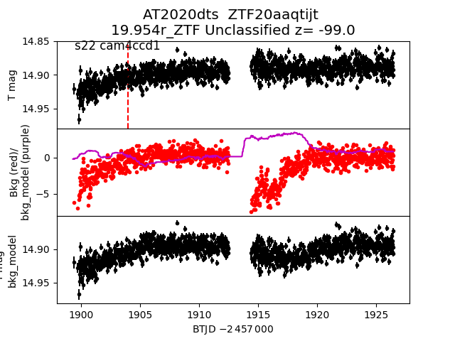
2020eev
2020dnh
2020ecl
2020dia
2020ddb
2020dcx
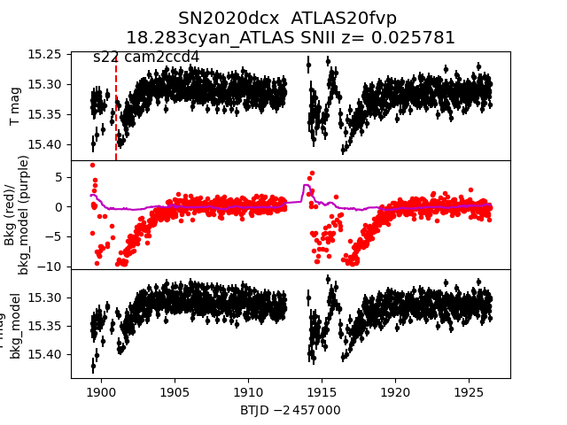
2020dge
2020eee
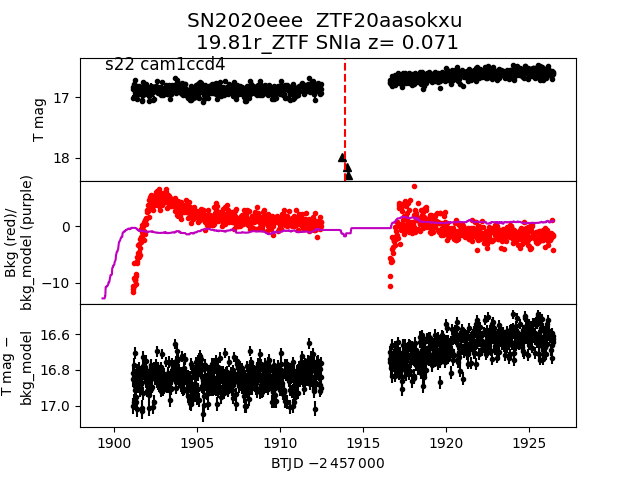
2020edv
2020drf
2020dry
2020cxf
2020elt
2020dsl
2020dnk
2020dwn
2020dts
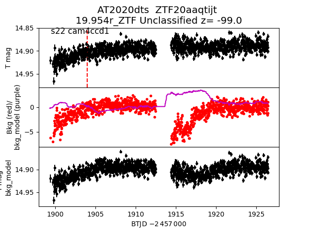
2020eev
2020dnh
2020ecl
2020dia
2020ddb
2020dcx
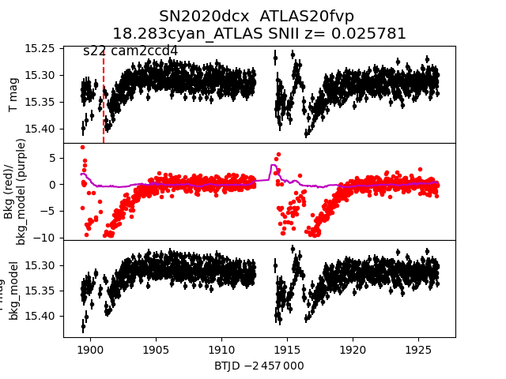
2020dge
2020eee
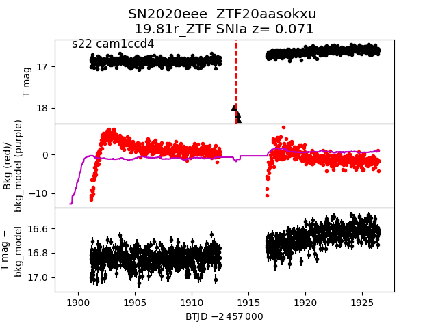
2020edv
2020drf
2020dry